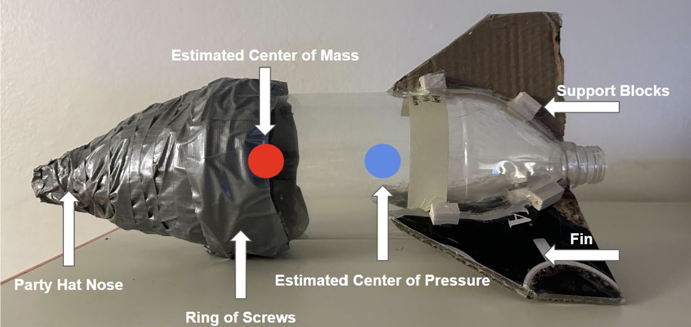
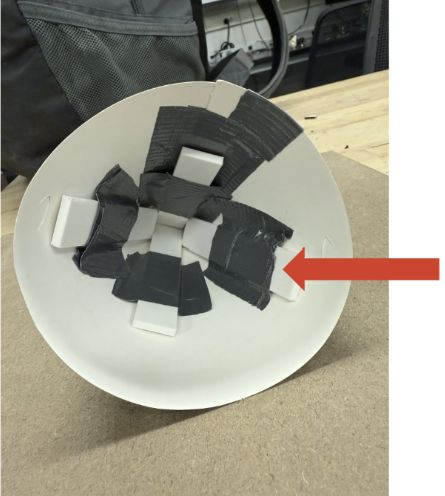

Sheet 03 of 09
Penn Engineering · 2026
A two-liter rocket and a flight model that chose its launch settings: through a gap in a wall 8 m away and down near a 22 m target, in one attempt.
Role
Rocket design and build, flight model
Course
MEAM 2480, Penn · 3-person team
Built with
Python · NumPy / SciPy · 3D printing
Result
Cleared the gap on the only attempt
The rocket is a 2 L bottle with water and a charge of liquid butane. The butane boils, pressurizes the bottle, and drives the water out the neck. On demo day we would be handed a wall distance, the height of a gap in that wall, and a target landing distance, and we would get one launch to send the rocket through the gap and onto the target.
We controlled four things: launch angle, water volume, water temperature, and butane charge. So, like the bungee, the job wasn't to build one perfect shot. It was to build a model that could pick the right shot in a few minutes from any inputs.
On the day, the wall was 8.15 m away, the gap was centered 6.4 m up, and the target was 22.0 m.
I designed and built the rocket around one requirement: it had to fly the same way every time, or no model could predict it. A party-hat nose cone kept the front sharp. After an early launch cracked the cone joint, I reinforced it with duct tape outside and four 3D-printed supports inside, which also moved mass toward the nose.
For the final lab I added a ring of screws at the cone joint, raising the dry mass from 146 g to 298 g. A heavier rocket is less sensitive to gusts and small drag differences, which mattered more than raw range for a single scored shot. Three double-layer cardboard fins, hot-glued and braced with twelve wooden blocks, kept the center of pressure behind the center of mass. The rocket flew straight on every launch.

The model splits each launch into two phases. In the thrust phase, the butane holds the bottle near its saturation pressure, set by water temperature through the Antoine equation. That pressure pushes water through the 21 mm neck, and the model tracks flow rate, thrust, drag, and the shrinking mass, stepping Newton's second law forward every millisecond. Once the water is gone, the ballistic phase is just gravity and quadratic drag until the rocket lands.
Physics alone doesn't capture a real launch: the seal leaks, not all the butane boils in time, and a taped bottle isn't a clean airfoil. So three coefficients were fit to launch data. Nozzle discharge (0.379) and drag (1.341) came from our first lab's launches, by minimizing the error between predicted and measured range. A butane-efficiency factor (0.497) came from six more launches where only the butane charge changed, from 3 g to 26 g.

The forward model answers "where will this launch land?" Demo day needed the reverse: "what launch lands here?" We fixed water at 500 mL and room temperature, the conditions we had calibrated at, and solved for the other two inputs. Angle mostly shapes the arc, and butane mostly sets the range.
The solver sweeps a 50 × 50 grid of angle and butane, runs the full flight model for each, and scores how far the rocket misses the gap height at the wall and the target on the ground. It then refines the best grid point with Nelder-Mead. For demo day it returned 52° and 11.9 g. We launched at 51° and 12 g.
The rocket went through the gap on the first and only attempt and landed at 23.99 m, 1.99 m past the 22.0 m target. That's a 9% miss on range, but the gap, the hard constraint, was cleared.
The model is most accurate near the conditions we used on demo day, around 12 g of butane. One efficiency factor can't cover the whole range: it under-predicts thrust at small charges and over-predicts at large ones. Butane was also the hardest input to load precisely, since going from 5 g to 8 g nearly doubled the range. A finer scale and a model of how efficiency changes with charge size would be the next steps.
1 / 1
Gap cleared on the only attempt (6.4 m up, 8.15 m out)
1.99 m
Landing error against a 22.0 m target
28
Test launches across two labs to build and check the model
The simulator runs the same model and solver in your browser. Set a wall, a gap, and a target, and watch it pick the launch, or set the launch yourself. It reproduces our Python model's outputs to within 0.01 m.